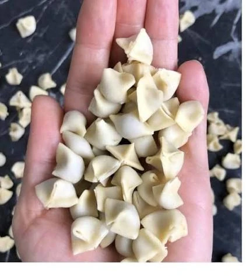
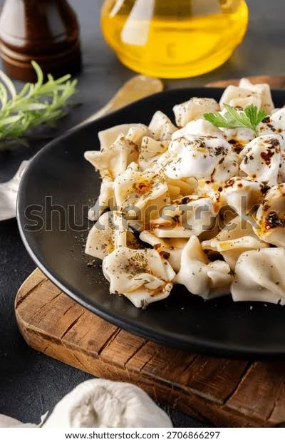
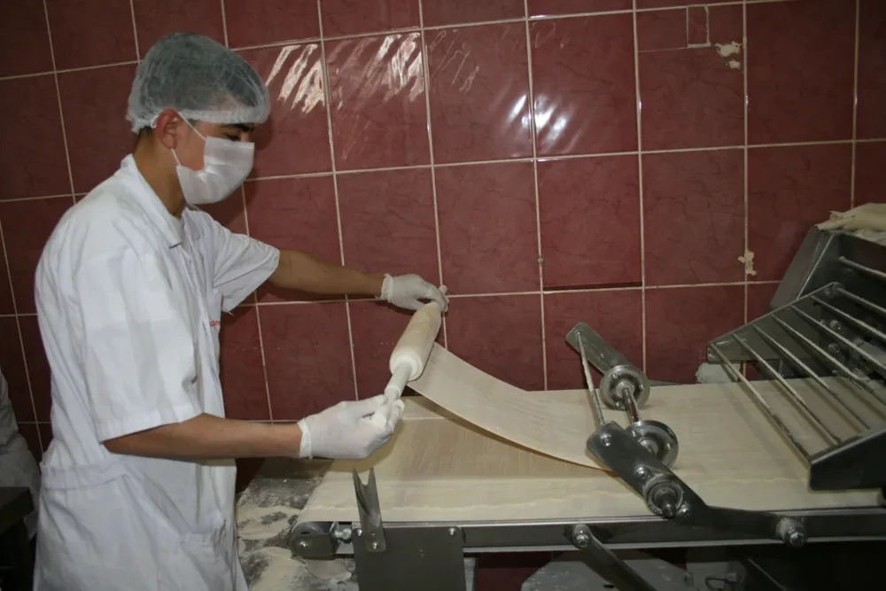
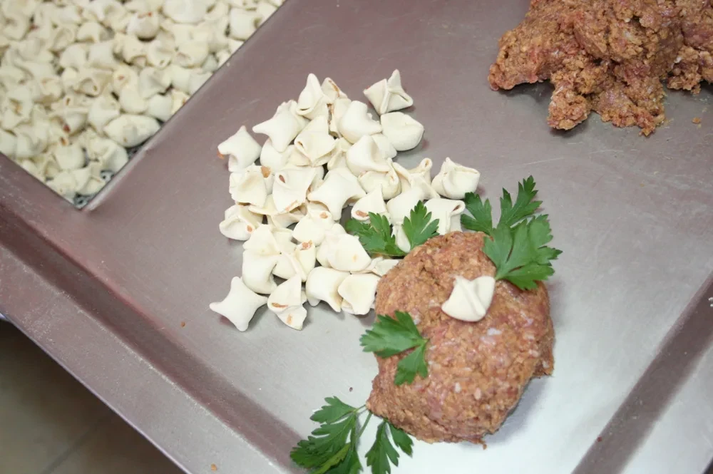
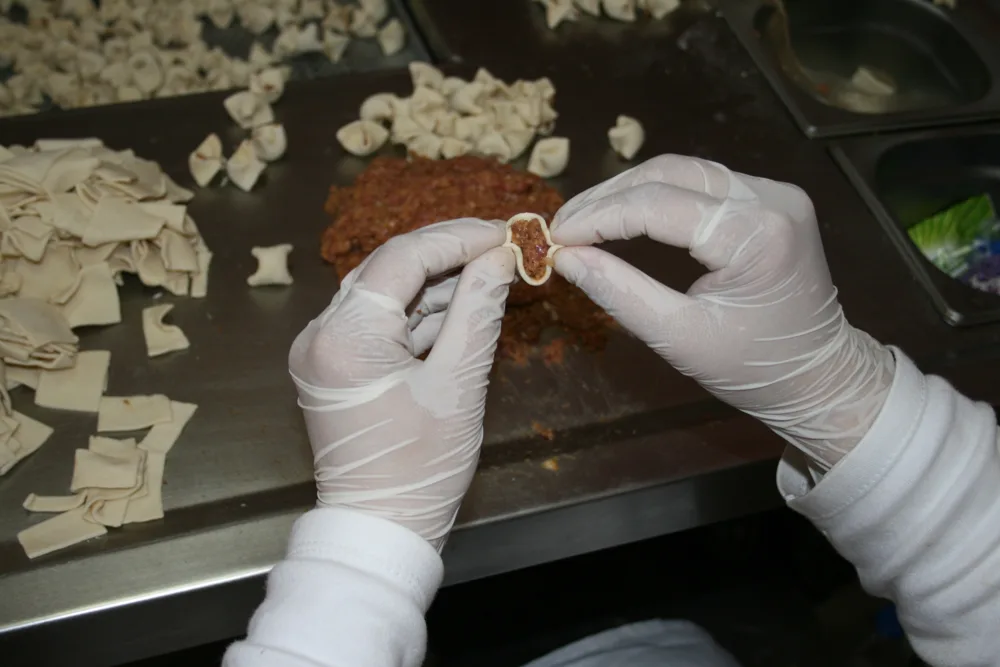
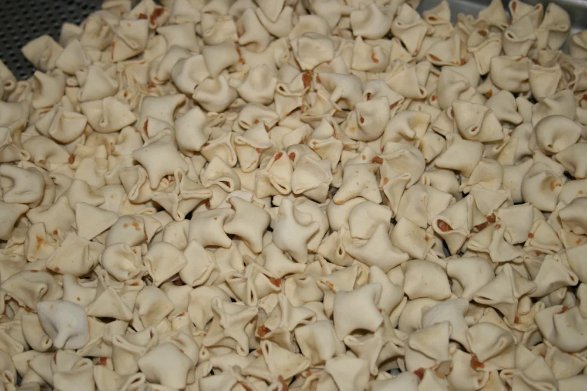
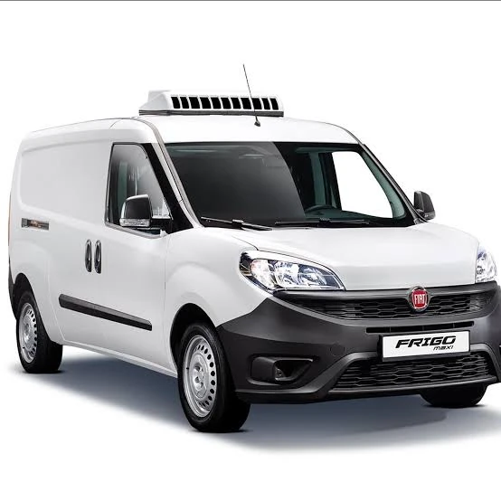
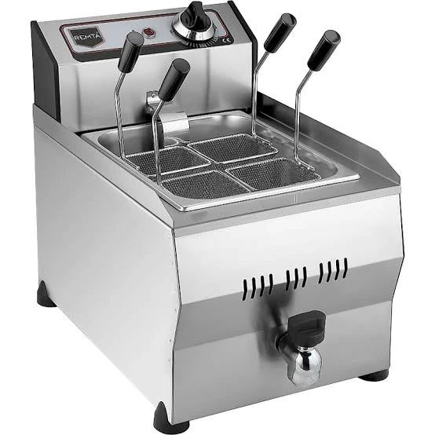

Çok Satan

Geleneksel Kayseri Tipi Dana Mantı
İncecik açılmış hamur, %100 dana eti ve dengeli baharatlarla klasik Kayseri lezzeti.
Fiyat
185 ₺
Özenle yoğrulmuş incecik hamur, bol kıymalı geleneksel harç. Anne eli lezzetinde dondurulmuş Türk mantısı, özel ısı yalıtımlı strafor ambalajıyla tazeliği korunarak kapınıza geliyor.

Her damak zevkine ve mutfak ihtiyacına uygun paket seçeneklerimizi inceleyin. İster tek tıkla sepete ekleyin, ister doğrudan WhatsApp üzerinden siparişinizi oluşturun.

İncecik açılmış hamur, %100 dana eti ve dengeli baharatlarla klasik Kayseri lezzeti.
Geleneksel mantı lezzetini korurken modern gıda teknolojisinin tüm hijyen ve şoklama imkanlarını kullanıyoruz.
Harcımızda soya kıyması, mekanik ayrılmış et veya koruyucu kimyasal kullanmıyoruz. Sadece taze dana kıyma, kuru soğan ve baharat harmanı.
Mantılar bireysel olarak dondurulduğu için poşet içinde asla topaklanmaz ve yapışmaz. Pişerken tek tek suya dağılır ve hamurlaşmaz.
Özel yoğurma tekniğimizle açılan ince hamur, tencerede çatlamaz veya açılmaz. Hamur değil, gerçek etli mantı yediğinizi hissedersiniz.
Özel strafor kutular ve kuru buz takviyesiyle paketlenir. Türkiye'nin her yerine soğuk zinciri bozulmadan sağlam şekilde ulaştırılır.
Anadolu sofralarının asırlık lezzeti olan mantıyı, anne eli titizliği ve yüksek üretim kapasitesiyle buluşturuyoruz. Üretim sürecimizin merkezinde dürüst hammadde seçimi, tavizsiz hijyen ve mutfağınıza ilk günkü tazelikte ulaşan güvenilir soğuk zincir prensibi yer alır.
Bize Ulaşın & Bilgi Alın ↗Tesisimizde gerçekleştirilen her aşama, Türk Gıda Kodeksi standartlarına ve soğuk zincir ilkelerine tam uyumla yönetilir.

Yüksek proteinli sert buğday unu, taze yumurta ve su ile elastik, diri bir hamur yoğrulur.

Günlük çekilmiş dana kıyma, ince doğranmış kuru soğan ve geleneksel baharatlarla harmanlanır.

İncecik açılan hamur karelerine bol harç yerleştirilir ve pişerken açılmayacak şekilde kapatılır.

Mantı taneleri saniyeler içinde şoklanarak kristalleşme ve tat kaybı olmadan dondurulur.

El değmeden paketlenir, -18°C depolarda saklanır ve strafor ambalajla kapınıza sevk edilir.
Dondurulmuş mantıyı en lezzetli kıvama getirmek için bu 3 pratik adımı uygulamanız yeterlidir.

500 gr mantı için en az 2.5 litre suyu tencereye alın. 1 tatlı kaşığı kaya tuzu ekleyip fokurdayana kadar kaynatın.
Mantıları dondurucudan çıkardığınız gibi donuk halde kaynayan suya atın. Tahta kaşıkla nazikçe bir tur karıştırın ve orta ateşte 8 - 10 dakika haşlayın.
Süzdüğünüz mantıları tabağa alın. Üzerine çırpılmış sarımsaklı süzme yoğurt ve kızgın tereyağında kavrulmuş kırmızı pul biber, nane ve sumak gezdirin.
Sipariş, kargo, saklama ve toptan tedarik ile ilgili tüm sorularınızın yanıtları.
Hayır. Ürünlerimizi kalın etli, ısı yalıtımlı özel strafor kutular içerisinde ve dondurucu kuru buz / donuk jel aküleri eşliğinde sevk ediyoruz. Bu sayede paket içi sıcaklık 48 saat boyunca -18°C donuk muhafaza sınırları içinde kalır ve kapınıza taş gibi donuk teslim edilir.
Hafta içi saat 14:00'e kadar verilen siparişler aynı gün özel strafor ambalajında kargoya teslim edilir. Bölgenize bağlı olarak genellikle 1-2 iş günü içerisinde adresinize teslim edilmektedir.
İç harcımızda yalnızca %100 yerli besi dana eti kullanılmaktadır. Soya kıyması, mekanik ayrılmış tavuk/hindi eti, sakatat veya lezzet artırıcı MSG kesinlikle içermez.
Kesinlikle hayır. Hamurumuz sert buğday unu ve yumurta ile özel mukavemette yoğrulur. -40°C IQF şoklama sayesinde taneler yapışmaz. Pişirme talimatına uyarak bol kaynar suya donuk attığınız sürece hamur diri kalır ve suyunu içine hapseder.
Evet. Türkiye genelinde yüzlerce restoran, otel, kafe ve markete toptan tedarik sağlıyoruz. 2.5 kg ve 5 kg şef kolilerimiz için toptan satış ekibimizle WhatsApp veya telefon üzerinden iletişime geçebilirsiniz.
-18°C derin dondurucuda paket üzerinde yer alan son tüketim tarihine kadar (üretimden itibaren 12 ay) ilk günkü lezzet ve tazeliğini korur. Çözünen ürünü tekrar dondurmayınız.
İster sofranız için perakende paket siparişi verin, ister işletmeniz için toptan fiyat teklifi alın. Satış ekibimiz size yardımcı olmaktan memnuniyet duyar.